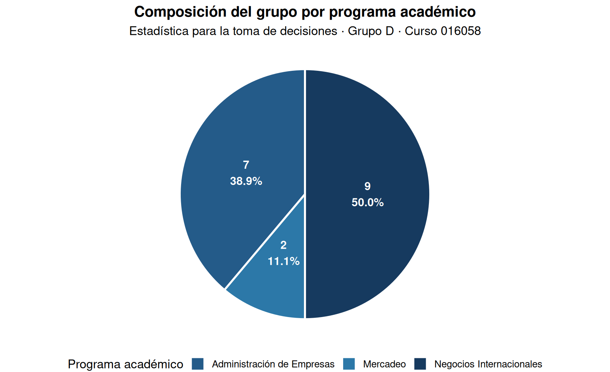
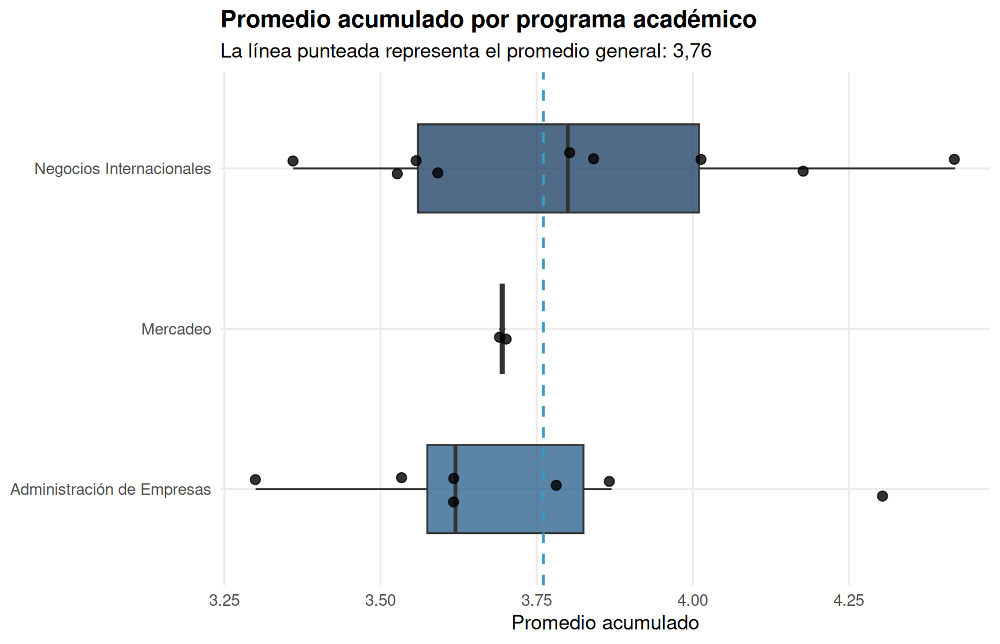
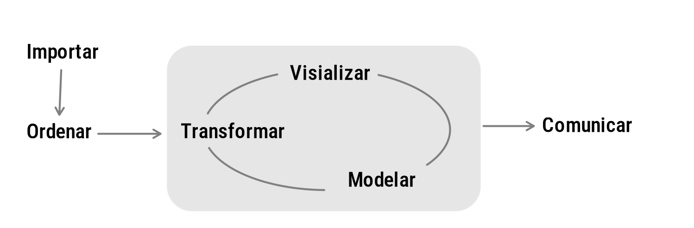

Para abordar las primeras etapas se plantea la actividad 101, donde se plantea la necesidad de definir un problema, definir unos objetivos y determinar las variables que serán empleadas para poder cumplir con los objetivos planteados. Continuaremos con una parte importante de esta metodología que está relacionada con la obtención de la información y la construcción de la base de datos.


Una base de datos es un conjunto de datos pertenecientes a un
mismo contexto y almacenados sistemáticamente para su posterior
uso. Wikipedia Una base de datos en estadística es un conjunto de
información relacionada con una población organizada en filas y
columnas. Las columnas corresponden a las variables y las filas están
relacionadas con los individuos u objetos de estudio.
Es importante indicar que variables como: número de la encuesta, número
de identificación, teléfono, dirección, entre otros, no constituyen
variables estadística, aun que pueden ser utilizadas para la
identificación de la persona u objeto de donde proviene la información.
Existen repositorio de bases de datos para uso general como:
Como ejemplo de una base de datos real del curso utilizaremos el reporte de Estadística para la toma de decisiones, grupo D, con ID de curso 016058. La base contiene 18 registros y 8 campos. Cada fila representa a un estudiante y cada columna representa una característica registrada.
Para proteger la información personal, los nombres y números de identificación se conservan únicamente en el archivo de trabajo y no se muestran en esta página.
| Programa académico | Estudiantes | Participación | Promedio acumulado |
|---|---|---|---|
| Administración de Empresas | 7 | 38.9% | 3.72 |
| Mercadeo | 2 | 11.1% | 3.70 |
| Negocios Internacionales | 9 | 50.0% | 3.81 |
La base incluye 3 programas académicos. El promedio acumulado general es 3,76 y el rango observado va de 3,3 a 4,42.
| Campo | Descripción | Tipo de dato | Uso |
|---|---|---|---|
id |
Número consecutivo del registro | Identificador | Control |
nombre |
Nombre del estudiante | Identificador personal | Control |
emplid |
Identificador institucional del estudiante | Identificador personal | Control |
carrera |
Programa académico | Cualitativo nominal | Análisis |
matriculada |
Número de veces que ha matriculado | Cuantitativo discreto | Análisis |
cancelada |
Número de cancelaciones | Cuantitativo discreto | Análisis |
perdida |
Número de veces que ha perdido | Cuantitativo discreto | Análisis |
promedio |
Promedio acumulado | Cuantitativo continuo | Análisis |
data(iris)
head(iris) Sepal.Length Sepal.Width Petal.Length Petal.Width Species
1 5.1 3.5 1.4 0.2 setosa
2 4.9 3.0 1.4 0.2 setosa
3 4.7 3.2 1.3 0.2 setosa
4 4.6 3.1 1.5 0.2 setosa
5 5.0 3.6 1.4 0.2 setosa
6 5.4 3.9 1.7 0.4 setosaDatos de iris (de Fisher o Anderson) + longitud y ancho del sépalo + largo y ancho de pétalos + especies: setosa, versicolor y virginica. Base de datos estadísticos se estructura mediante arreglo de filas y columnas (matriz) donde por lo general las columnas representan las variables y las filas los registros de los objetos de estudio
Una base de datos es un conjunto de datos pertenecientes a un mismo contexto y almacenados sistemáticamente para su posterior uso.
Wikipedia
Una base de datos en estadística es un conjunto de información relacionada con una población organizada en filas y columnas. Las columnas corresponden a las variables y las filas están relacionadas con los individuos u objetos de estudio.
Existen repositorio de bases de datos para uso general
dataset en RStudio (bases de datos dentro de los paquetes de R)
Biodiversidad del Global Biodiversity Information Facility (GBIF)
data(iris)
library(DT)
DT::datatable(head(iris, 150),fillContainer = FALSE, options = list(pageLength = 8))Las siguientes etapas comprenden el ciclo de los datos desde la importación hasta la comunicación. Estas etapas suceden al interior de la Metodología Estadística antes mencionada y constituyen una parte muy importante del proceso, pues de la calidad de los datos, depende la calidad de los resultados.

Imagen tomada de : https://bitsandbricks.github.io/ciencia_de_datos_gente_sociable/ Utilizaremos para este proceso el lenguaje estadístico R , bajo RStudio
Los datos pueden proceder de diferentes fuentes (tanto primarias como secundarias), dentro de las cuales pueden ser: * Encuesta personal (datos primarios)
Online ( utilizando sistemas como REDCap, Office 365 - forms)
Entrevista cara a cara
Entrevista telefónica
Investigación propia ( observaciones en laboratorios)
Sistema automático de recolección de datos ( webscraping)
Fuente externa (datos secundarios : bases de datos abiertos)
DANE (o entidades gubernamentales)
Cámara de Comercio
Agremiaciones (observatorios de gremios)
Bancos de datos abiertos
Algunas de las herramientas utiliziadas en el manejo de información son : + Excel + SQL + Oracle + SAS + Julia
En nuestro caso haremos uso del lenguaje estadístico **R*
Es importante después de haber importado la base de datos, hacer una revisión de cada una de las variables con el fin de poder detectar:
Datos faltantes (NA)
Datos anómalos o raros
Etiquetas mal colocadas ( minúsculas, MAYÚSCULAS, Titulo…)
Existen metodologías para corregir estos problemas sin afectar la información contenida en la data, para lo cual debemos realizar una verificación inicial mediante la construcción de tablas y resumen de datos.
Las bases de datos debe estar acompañadas de una ficha técnica donde si indican sus principales características :
Los datos se pueden importar de diferentes formas : + Desde el menú de RStudio
Desde la consola de R o RStudio
De manera automática Ayudas:
data("mtcars")
head(mtcars, n=3) mpg cyl disp hp drat wt qsec vs am gear carb
Mazda RX4 21.0 6 160 110 3.90 2.620 16.46 0 1 4 4
Mazda RX4 Wag 21.0 6 160 110 3.90 2.875 17.02 0 1 4 4
Datsun 710 22.8 4 108 93 3.85 2.320 18.61 1 1 4 1RStudio usando ventanas : File/ Import Dataset / From Excel…
RStudio usando comandos :
El formato csv es uno de los mas utilizados para el almacenamiento de datos estructurados (agrupados en filas y columnas) . El termino csv significa “valores separados por comas”
RStudio usando ventanas : File/ Import Dataset / From Text (base)…
RStudio usando comandos :
library(readr)
casas <- read_delim("data/casas.csv", delim = ";", escape_double = FALSE, trim_ws = TRUE)
library(readr)
fifa2026 <- read_csv("data/squads_and_players.csv", show_col_types = FALSE)
head(fifa2026)# A tibble: 6 × 10
player_id team_id player_name position club_team market_value_eur caps
<dbl> <dbl> <chr> <chr> <chr> <dbl> <dbl>
1 1 1 José Raúl Rangel GK CD Guada… 8933646 15
2 2 1 Jorge Eduardo San… DEF PAOK Sal… 24628639 59
3 3 1 César Jasib Montes DEF FC Lokom… 10912552 69
4 4 1 Edson Omar Alvarez DEF Fenerbah… 10875943 100
5 5 1 Johan Felipe Vasq… DEF Genoa CFC 18265363 47
6 6 1 Erik Antonio Lira MID CF Cruz … 21520963 26
# ℹ 3 more variables: date_of_birth <date>, height_cm <dbl>, goals <dbl>En este ejemplo se utiliza la base FIFA World Cup 2026 Dataset, que contiene información de los jugadores de las 48 selecciones participantes.
La base se puede consultar y descargar desde Hugging Face.
Descargar
squads_and_players.csv directamente desde GitHub. Al
abrir el enlace, se puede guardar el archivo con Ctrl+S
o Guardar como.
El archivo se descarga con el nombre
squads_and_players.csv y se guarda en la carpeta
data/.
Finalmente se importa en RStudio con la función
read_csv().
library(DT)
fifa2026 <- read.csv("data/squads_and_players.csv")
datatable(head(fifa2026, 100), fillContainer = FALSE, options = list(pageLength = 5))
library(DT)
library(readr)
fifa2026 <- read_csv("data/squads_and_players.csv", show_col_types = FALSE)
datatable(head(fifa2026, 100), fillContainer = FALSE, options = list(pageLength = 5))La API de datos abiertos de Socrata le permite acceder mediante programación a una gran cantidad de recursos de datos abiertos de gobiernos, organizaciones sin fines de lucro y ONG de todo el mundo. Haga clic en el enlace de abajo y pruebe un ejemplo en vivo ahora mismo.
Cargar la base de datos de COVID-19 Colombia
# install.packages("RSocrata")
library(RSocrata)
token ="ew2rEMuESuzWPqMkyPfOSGJgE"
Colombia= read.socrata("https://www.datos.gov.co/resource/gt2j-8ykr.json", app_token = token)
saveRDS(Colombia,"data/Colombia.RDS")
# install.packages("RSocrata")
library(RSocrata)
token ="ew2rEMuESuzWPqMkyPfOSGJgE"
Colombia= read.socrata("https://www.datos.gov.co/resource/gt2j-8ykr.json", app_token = token)
saveRDS(Colombia,"data/Colombia.RDS")
# 25-07-2025 - 10:13Se requiere solicitar token en la pagina de los datos